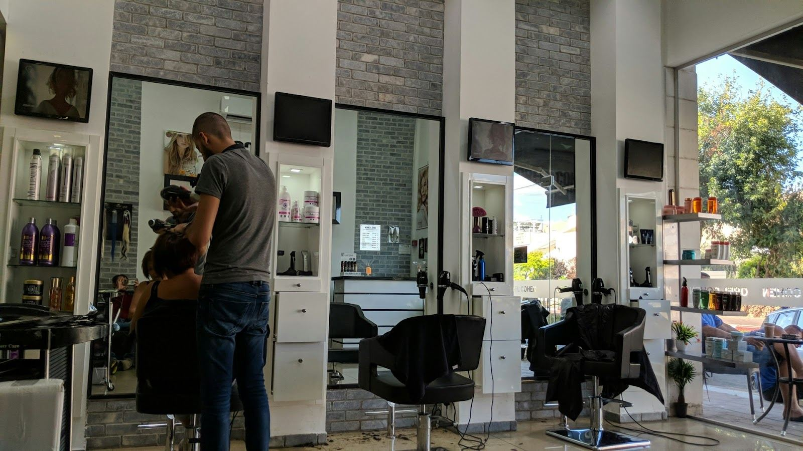
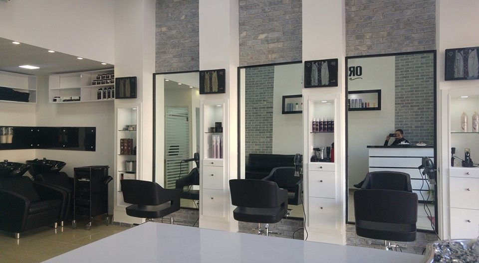
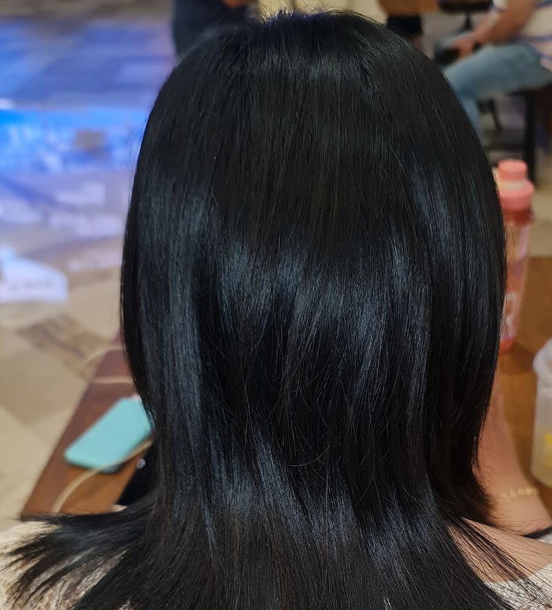
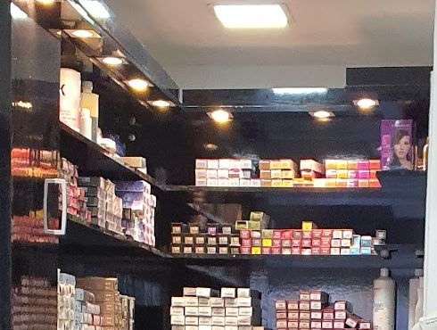

תמונה להמחשהIllustrative photo
תספורתThe cut
קו נקי שנבנה לפי השיער.A clean line, shaped to the hair.
קונספט לדוגמה שנבנה עבור אוראל כהן – מעצב שיער · זה אינו האתר הרשמי של העסקA sample concept built for Orel Cohen – Hairdresser · This is not the business’s official website
59 ביקורות בגוגל59 Google reviews
“חוויה נעימה לשהות במספרה.”“A pleasant experience being in the salon.”

קיר לבנים אפור, מראות במסגרת שחורה ואור מהשדרה. שדרות אח״י אילת 6, חיפה.Grey brick, black-framed mirrors and light from the boulevard. 6 Ahi Eilat Blvd, Haifa.
4.8· 59 ביקורות בגוגל· 59 Google reviewsעמדות לבנות, קיר לבנים ומסכים מעל כל מראה.White stations, a brick wall and a screen above every mirror.


תמונה להמחשהIllustrative photoתספורת, צבע ופן, תחת קורת גג אחת.Cut, colour and blow-dry, under one roof.
קו נקי שנבנה לפי השיער.A clean line, shaped to the hair.

מדף שלם של גוונים, כאן בסלון.A whole shelf of shades, right here.
הגימור, מול המראה.The finish, in front of the mirror.
“ספר נהדר, צוות נפלא, חוויה נעימה לשהות במספרה. ואור המהממת שעושה גבות, טיפולי פנים, מקצוענות תחת קורת גג אחת.”“A great hairdresser, a wonderful team, a pleasant experience being in the salon. And the lovely Or who does brows and facials: professionalism under one roof.”
“מספרה ברמה גבוהה שאין כאלה בארץ.”“A top-level salon, there are none like it in the country.”
“מקום יפה, אחלה אנשים והמחירים שפויים.”“A beautiful place, great people and sensible prices.”
בוחרים טיפול ויום, וההודעה נכתבת לבד.Pick a treatment and a day; the note writes itself.
מה עושים?What are we doing?
באיזה יום?Which day?